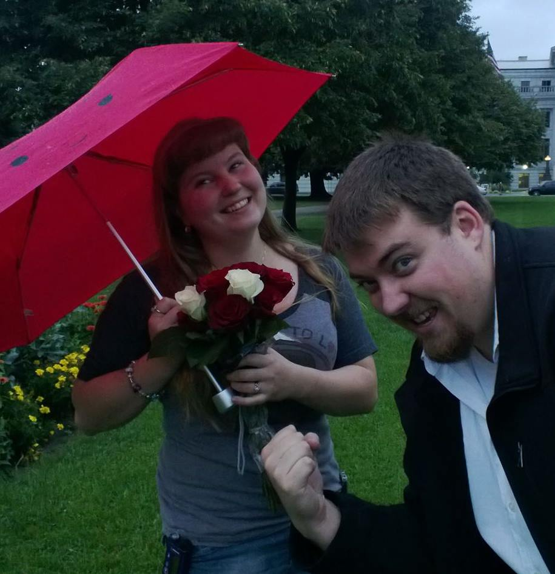
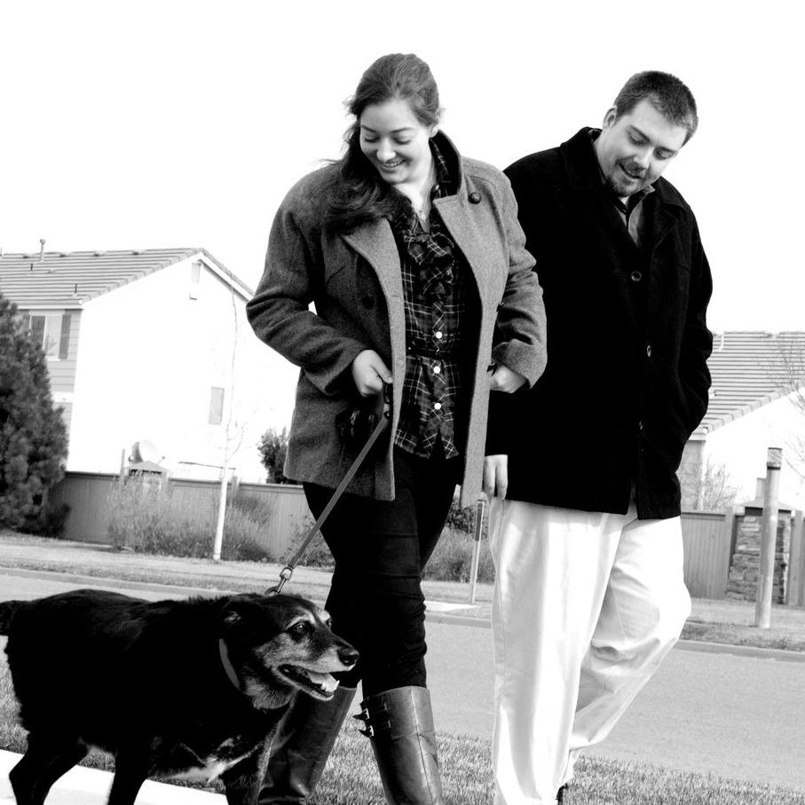

Thought I would do a little bit of Blog posting after the great events of the past week. We will of course start off with the proposal, and how I can't keep any secrets to save my life.
Rachele and I had started discussing marriage a while back, and needless to say life has been crazy for a while. With school, promotions at work and life in general I had not had much time to think about anything else. I did know that Rachele was the one I wanted to spend the rest of my life with. So, I began getting some ideas from her on rings that she likes. Low and behold, the booth at the Renaissance festival, Puzzle Rings by Norm was her favorite by far.
I started getting an idea and searched online. I found a site that sold them, however I later found out that they were a third party vendor. I decided to wait and go directly to the source. Tim, Jenni, Rachele and I went to the last weekend of the Ren Faire this year and I halfway decided I would like while there. I wanted to see the rings first hand of course, and make sure it was going to be top quality. The gentlemen there helped me out, and with a spur of the moment decision, I had the order done.
Norm contacted me shortly thereafter about locating the perfect diamond. He knew my taste right out of the gate, and we found the rock. Within 3 short days he called me back and said he had completed the ring and it was ready to ship. (Meanwhile, I start telling Rachele that oh this is going to take forever, who knows how long, etc etc.) The ring arrived at work, and of course everyone including myself thought it was perfect.
Side story: Hilarious moment when over at my sister's first house! Rachele had gone to the bathroom and I brought in my backpack. I was not very smooth with keeping the fact that I did have something I was showing people, but meh what can you do. The ring had been sitting outside for a bit, and it was hot to the touch. My sister says,
"The one ring, forged in the fires of mount doom!"
Priceless.
I started to develop an idea of how to ask actually her a long time ago. We were watching Monster's University, and she was so excited for a short that was going to be played before the movie. The Blue Umbrella was my inspiration. I kept thinking, how would I duplicate that scene, the many many umbrellas getting in the way of true love. I settled on an area downtown, and hoped that I could find a day that it was raining.
The first week went by that I had the ring. It was 95 degrees out each day, no hope of rain. Then the deluge happened. It is extremely sad what it has done to parts of the state, but it was exactly what I was looking for!
Downside, I had to wait for this site to send me the replica umbrellas. They ensured me that these were exactly like the movie. However, the blue one arrived and it was way way way dark. The red one however looked perfect. So I set the plan in motion. I placed the umbrella in Rachele's bag for when she left Thursday to use during the day. She then made her way after a terrible day of rain down to Civic Center Park. I had her Mom, my Mom and Chris hiding to take pictures of her arrival and subsequent answer.
I was hoping for more foot traffic in the park itself, but sadly Coloradans know when to stay inside. It was sprinkling and was just perfect. I of course practiced what I was going to say and dropped the ball and lost it when the time came. I will never forget how I felt when she said yes, and when we kissed for what seemed like the first time all over again. It was truly spectacular.
I hope that you all enjoyed the rendition. For more details, feel free to bug me. I am sure I did not paint the glorious picture that is in my mind's eye.
We then were able to go camping this weekend with Tim, Jenni and Deishler. Was an absolute blast, but I am pretty exhausted currently. We got to do a hike up to Lake Mahan and did some fishing. Was a little more of a hike that we bargained for, but we had a good time nonetheless. Had Deish and Rachele build us a nice big fire I will need a much needed early night tonight. I can't wait to share our love with everyone once we set a date, but that won't be until both of us are just about done with school. In the meantime, let the ideas commence!
My Last Weekend
Hi Everyone,
Last weekend, I got to spend some time with our "Thumper D". I thought I would put something down on virtual paper to help me remember, and share with you all the love that he had for everyone he ever met. (It is also easier than talking, which tends to lead to water works.) So, here it is.
Thursday evening I drove over to my parent's abode, arriving after Rachele spent some time with him that afternoon. With my bags in tow, I opened the door. In younger day, this would have caused an explosion of barking, wagging, grunting and then of course dashing outside for relief. Instead I walked inside, set down my weekend gear and walked to his laying spot. He didn't realize I was there until I pet him belly. In one motion he was up, acting like his younger self and ready to venture outside to do his business. That night we watched some Sportscenter, after indulging in some nighttime snacks. I don't know of any other animal that responds so quickly to the crinkle of the wheat things box liner bag.
Friday started with an alarm. You know the kind, the usual sound from your alarming device. This alarm just also involves a rhythm being played on the side of the bed and a lot of snorting. I would get dressed, make our way outside and play the wonderful waiting game. The animals outside my parent's house knew how loveable this dog was. They were no longer scared and would continue about their morning being happy that this visitor to their domain was so docile.
If you don't know, our pal had a specific diet. This included your normal dry dog food, but a special treat. Canned Green Beans. You could try to feed him just the dry food, but he would sit politely and wait for his green beans. The rest of the morning included a jaunt up and down the walk, and many many treats.
Bachelor activities were on alert. Jeffrey Nicholas Barnes is getting married next weekend to his wonderful Fiance Nicole. I was meeting up with him to start our day/evening of bachelorness. Rachele came over to spend the rest of the day with him while I was away. (Sorry I missed out of Saturday Jeff)
Bachelor party omitted due to Bro-code. (However, it was awesome).
Back to the puppy. I will include a little story for Jeff and others. My friends in high school decided to cone my basement and room after the band banquet my junior year. My Mom knew they were planning it, so she let them in. Back then, the dog could hear anyone near the house. The way Jeff tells the story, it involved them walking up the stairs at our house, and "hitting the deck" as they thought it was me coming. I am sure it involved my Mom and Coal patrolling the upstairs. Either way, it was hilarious.
I then spent Saturday, Sunday and Monday with one of my best friends. He struggled sometimes, fighting through going up and down the stairs, getting up and down from his favorite places and trying his hardest to be your my best friend. Something was telling me this way going to be the last time I got to spend with him. I couldn't help but think about it. Everything seemed to become more special. Everything in turn was becoming more difficult. Rachele arrived Monday afternoon, and we spent a lazy hour or so on the back porch waiting for my parents and sister to arrive back from Virginia. I wanted him to know he was not alone and would never be alone again. I love watching his eyes light up as he would see my Mom, my Dad and my Sister get home. He whole butt would wag, he would stick right to my Mom's heel and I am sure would be thinking about how happy he was to be loved.

Coal, the most wonderful Dog to ever walk the Earth
This morning, Coal left us. For a while, it will feel like something is missing inside of us. But whenever I remember him, I will remember how amazing he was. I will particularly remember a time when I was walking to the couch to enjoy a sandwich. I had made this masterpiece to enjoy for lunch (probably my senior year of high school), and was carrying it at my side in a paper towel. I sat down, brought the sandwich up to my mouth and took a bite. The bite included nothing but bread. I looked down, and saw all of the insides were gone. I walked back to the kitchen, and on my way saw the culprit. Coal had a little mustard on his nose, and was busy licking his lips. He had followed the bobbing sandwich and snagged all of the insides. For those of you who knew him, stick that into your memory banks of this wonderful dog.
Rest in peace Coal, I hope that you are chasing squirrels and enjoying all the wheat thins you want. You were the perfect companion, friend and dog. I will never forget you.
About Me
Welcome to the Willie V Blog! My name is Charles Abrams and I am studying Web Development and Design
as well as working as a Tier 2 Application Support Specialist for a Software Company in Denver, CO. I
just recently got engaged to the most amazing woman in the world Rachele Hansen. She studies 3D and Digital
Animation at the University of Colorado Denver. When not working or doing schoolwork, I enjoy video games,
movies, our two cats and parakeet, Star Wars armor creation, football and enjoying time with my friends and family.
Please feel free to:
Follow my blog for updates
Leave feedback for topics you would like hear more about
Recommend awesome games/movies/cool websites you find on the internet